remotes::install_github("sizespectrum/mizerExperimental", ref = "tuneMR")
library(mizerExperimental)
library(tidyverse)Run other scenarios
Introduction
This final tutorial gives some examples from another mizer model, tuned to a different system and used to explore different questions. It is always useful to see alternative ways of using mizer and get examples of code to setup different analyses. This tutorial is contributed by Julia Blanchard. Here we will explore an example model of longline fishery that consists of targeting a single species, Patagonian toothfish.
As usual, we need to have some packages installed.
Then we load the model and explore its various properties.
params <- readParams("toothfish_model.rds")We look at the growth curves
plotGrowthCurves(params, species_panel = TRUE)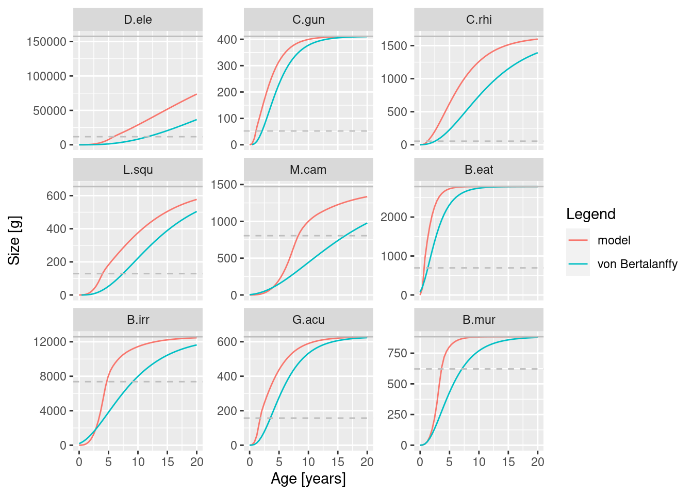
the spectra
plotlySpectra(params, power = 2, total = TRUE)the feeding levels
plotFeedingLevel(params)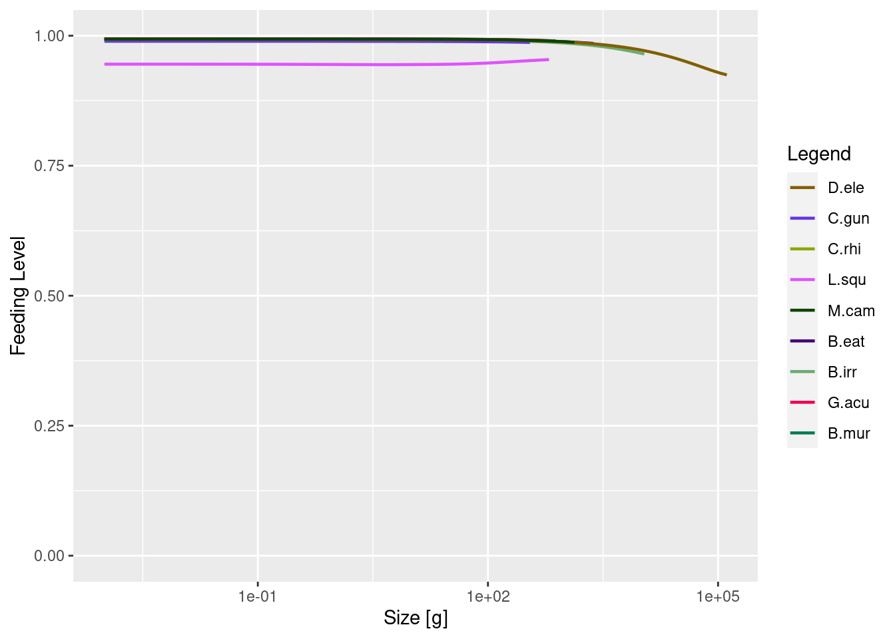
and diets
plotDiet(params)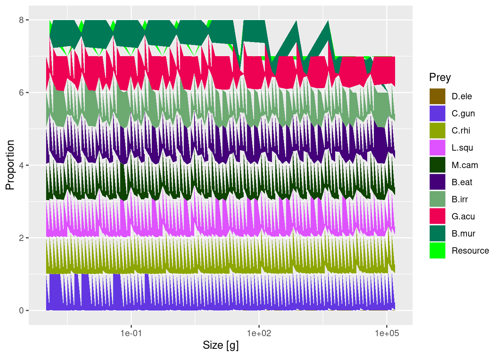
For this model, we had the following main criteria for our project:
Modelled biomasses were within +/- 10-20% of the observed biomasses.
Unfished normalised biomass size spectrum slope that is negative and close to -1
Growth curves approximated the von Bertalanffy growth curves for each species.
Toothfish diet captured dietary changes with body size and became more piscivorous at larger sizes.
Recruitment parameters ensured single-species yield curves were dome-shaped, as expected by theory.
The modeled catches through time captured the trends in the reported catches through time.
We can see from these plots that we still have more work to do with refining the model. The size at age for some species seem much higher than the empirical parameters, feeding level of near satiation for all species and the biomass of some species is much higher than the data. However size-at-age data are typically highly variable. So, let’s set some of those issues aside for now.
Let’s take a look at how fishing is set up in this model.
gear_params(params)Currently we can see there is one gear - longline - which has a knife_edge selectivity function that starts fishing at very large sizes of toothfish only (knife_edge_size=2722 g). The size selectivity was derived from the length distribution of catches from the long-line fisheries data. To explore further how to setup your fishing parameters and use gear_params() function you can look at the example here.
We can see that the initial_effort has been set to 1 and the catchability has been set to a very low number: 7e-07. This shows the model has been calibrated with a very low level of fishing mortality.
reproduction_level <- getReproductionLevel(params)
reproduction_level D.ele C.gun C.rhi L.squ M.cam B.eat B.irr G.acu
0.9998035 0.9994817 0.9991013 0.9426729 0.8279399 0.9999131 0.9996038 0.9996273
B.mur
0.9777815 plotYieldCurve(params, species = "D.ele", no_steps = 30, F_max = 2)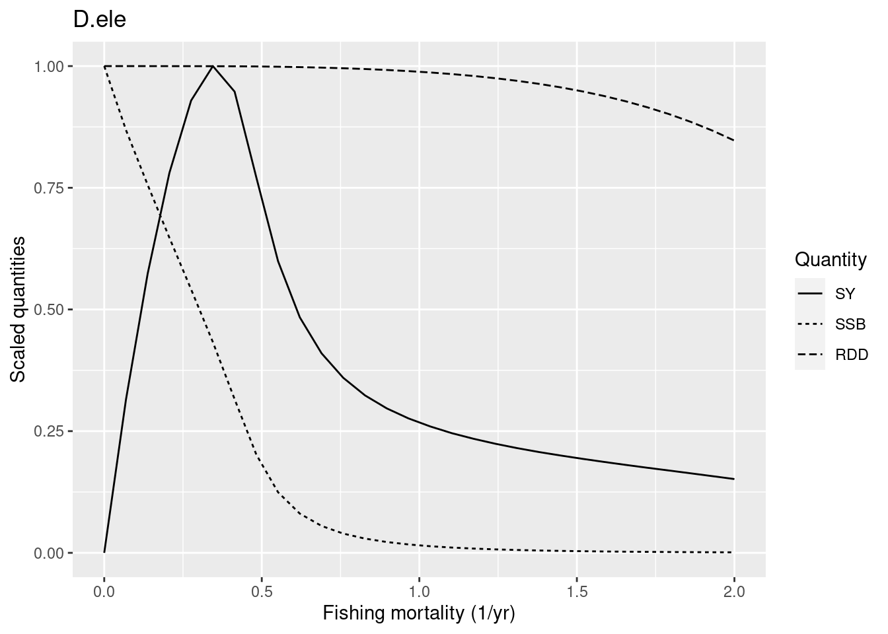
We get F_{MSY} of about 0.4. Let’s see what happens if reproduction level is reduced
params2 <- setBevertonHolt(params, reproduction_level = 0.85)
sim2 <- project(params2, t_max = 20)
plotBiomass(sim2)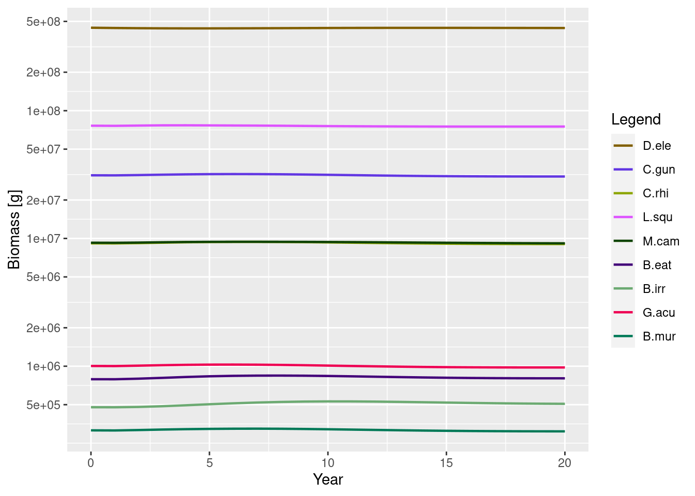
plotYieldCurve(params2, species="D.ele", F_max = 2)Warning in projectToSteady(params, t_max = t_max, progress_bar = FALSE, : D.ele
are going extinct.
Warning in projectToSteady(params, t_max = t_max, progress_bar = FALSE, : D.ele
are going extinct.
Warning in projectToSteady(params, t_max = t_max, progress_bar = FALSE, : D.ele
are going extinct.
Warning in projectToSteady(params, t_max = t_max, progress_bar = FALSE, : D.ele
are going extinct.
Warning in projectToSteady(params, t_max = t_max, progress_bar = FALSE, : D.ele
are going extinct.
Warning in projectToSteady(params, t_max = t_max, progress_bar = FALSE, : D.ele
are going extinct.
Warning in projectToSteady(params, t_max = t_max, progress_bar = FALSE, : D.ele
are going extinct.
Warning in projectToSteady(params, t_max = t_max, progress_bar = FALSE, : D.ele
are going extinct.
Warning in projectToSteady(params, t_max = t_max, progress_bar = FALSE, : D.ele
are going extinct.
Warning in projectToSteady(params, t_max = t_max, progress_bar = FALSE, : D.ele
are going extinct.
Warning in projectToSteady(params, t_max = t_max, progress_bar = FALSE, : D.ele
are going extinct.
Warning in projectToSteady(params, t_max = t_max, progress_bar = FALSE, : D.ele
are going extinct.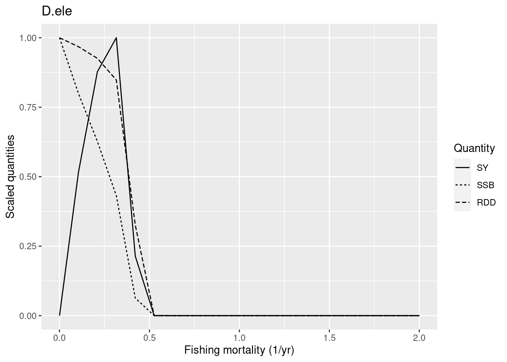
This shows that altering the level of density-dependence in recruitment affects how sensitive toothfish (D.ele for short) is to fishing. By reducing the reproduction level just a bit, we make its biomass collapse completely at fishing mortality of about 0.5. We will use the previous reproduction level in further examples.
Comparing ecosystem states: effects of fishing relative to an unfished state
To be able to assess the wider ecosystem impacts of fishing in the community we need to understand how changes compare to an unfished state. We can use the above model unfished steady state with effort = 0 to do this combined with some functions to calculate ecological indicators.
Let’s compare the current size spectra (with fishing) to the unfished size spectra to assess whether there is any evidence of a size-structured trophic cascade due to fishing.
sim0 <- project(params2, effort = 0, t_max = 20)
sim <- project(params2, effort = 1, t_max = 20)
plotSpectraRelative(sim0, sim)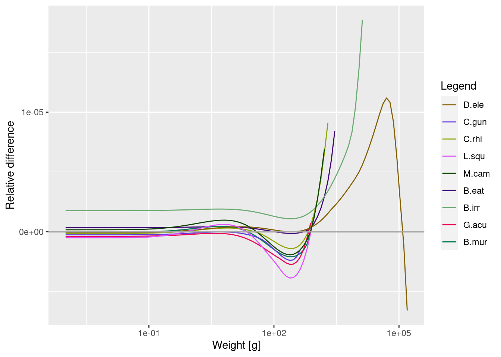
Here we can see the effect of the reduction in large sized individuals of heavily fished species on the other sizes and species in the model, relative to the unfished steady state.
The abundance of some (but not all) of the smaller to medium sizes of prey are a lot higher when their larger predators are removed (note the logarithmic scale). This is because when toothfish are removed via fishing, they have less predation mortality and no fishing inflicted upon them.
Fishing through time: past time series
Mizer can also be used to carry out projections with changes in fishing effort. We will start by reading in a time series of catch and effort. We will read in the effort data for this fishery. Note: these are not the correct effort values, they are only for illustration in this example. Then we plot effort and catch through time.
dat <- readRDS("toothfish/longline.rds")
plot_dat <- melt(dat, "Year")
ggplot(plot_dat, aes(x = Year, y = value)) +
geom_point() +
facet_wrap(~variable, nrow = 2, scales = "free")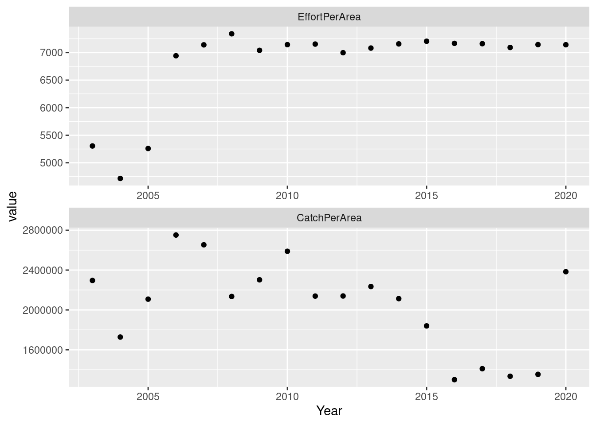
We can see from the data that there have been big changes in effort and catches through time. The first plot shows relative effort per area (please note that these data are not correct and are only being used for illustration in this example). Catches are in tonnes per square km fished. They have changed a lot over the years.
Previously we assumed effort was 1 and we worked with catchability as the variable. Real effort data can come in all sorts of different units (hours or days fished, kilowatt days, number of vessels all per unit time). The key to using this in our model is that the catchability is the fraction of the available (that is also selected by the gear) stock caught per unit of any effort that is included.
Often, we have used fishing mortality rates from stock assessment to drive changes in effort through time, assuming Q*E = F at maximally selected sizes (as in this paper and others). But in many cases this information is not available. It also could be misleading as those fishing mortality rates are estimated using very different single-species models (but sometimes that is the best we have to work with, and as with all of the assumptions we make the limitations just need to be clear).
How do we incorporate the effort data into the model? First, we have to re-arrange the data so it can be read into the params object.
Next we use the effort data to project the model forwards from it’s steady state. But wait - we did not set up the model for the first year of the data, when fishing only just began. It may make more sense to use a steady state without fishing as the initial values for our projection.
#project to zero fishing rate
params <- projectToSteady(params, effort = 0)Convergence was achieved in 1.5 years.#project with fishing effort
simf <- project(params, effort = effort_time)
plotYieldGear(simf) +
geom_point(data = dat, shape = 1, size = 1,
mapping = aes(x = Year, y = CatchPerArea))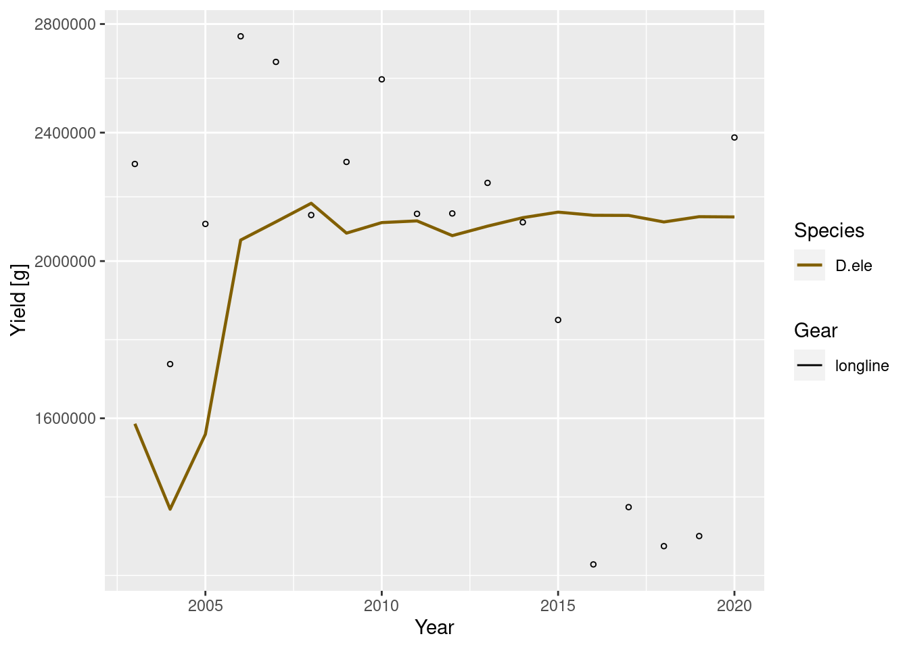
Here we can see that the modeled catch time series fall within the scatter of the observed catch data (reassuring), but the trends are different. It seems there is a sharp decline in modeled catches towards the end of the time series. While we should not expect the exact up and down fluctuations to be captured by our model (we don’t have anything forcing the changes through time other than fishing!), we could examine further how changing the reproduction parameters affects how well the model captures stock decline (and later, recovery), relative to the trends in the data. It may also be that our estimates of catchability and effort are way off (they are). And that other factors could be influencing observed changes not accounted for by our model.
What if we only have catch data?
What if there was no effort data only catch? This is the case for many data-poor fisheries or for fisheries where there is only restricted access to effort data.
Many fisheries develop through time according to phases: an exponential growth period, following either a peak and subsequent decline and a plateau, if stocks drop below sustainable levels and management kicks in (see here for example). These different types of development can be represented by a function, logistic_effort(), and can be used to help estimate the fishing parameters given the the model parameters and data you may have. This is the approach used here. Here, we will use this function to explore effort through time.
After using the above function we can scale the effort up to the effort units we used in our base model. We do this by setting the Fmax in the logistic equation to the desired level of fishing mortality rate (e.g. 0.005 was used above but for this example we will plug in a different value to explore heavier fishing). We then divide Fmax by our estimated catchability coefficient (which was estimated to be a very small number) to get effort in the correct ballpark and units as the data we used above. If you want to run the model directly with fishing mortality rate as the “effort” driver, you would need to set the catchability coefficient to 1 in this example. If no effort exists for your system, we would need to estimate the catchability coefficient (either by hand tuning or statistical time-series fitting).
neweffort <- logistic_effort(effort_time, time = 1990:2020, Fmax = 0.5,
steepness = 0.9, midpoint = 2005)
#rescale to get effort in same units as our example
neweffort <- neweffort / gear_params(params)$catchability[1]
# or if you want to just use fishing mortality only in your model,
# overwrite the catchability to 1:
# gear_params(params)$catchability[1] <- 1
year = 1990:2020
qplot(year, neweffort, ylab = "effort", xlab = "")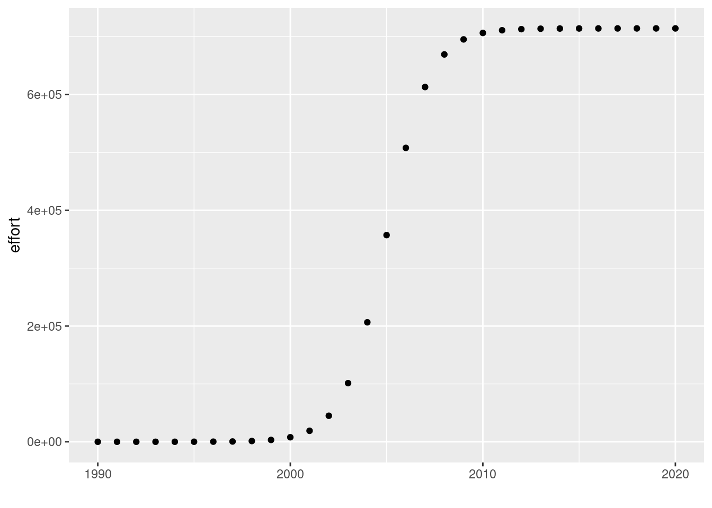
Now you can run the same model above using this effort and then plot effort and biomass dynamics through time.
params3 <- setInitialValues(params2, sim0)
simf3 <- project(params3, effort = neweffort)
plotYieldGear(simf3) +
geom_point(data = dat, shape = 1, size = 1,
mapping = aes(x = Year, y = CatchPerArea)) +
xlim(2000, 2020)Warning: Removed 10 row(s) containing missing values (geom_path).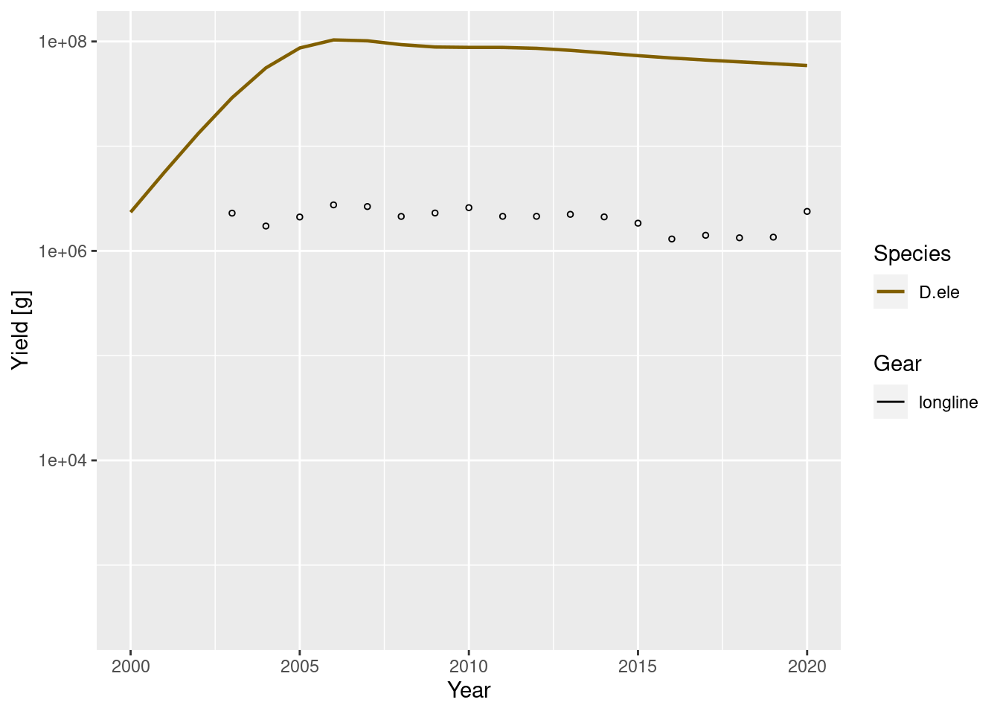
plotBiomass(simf3)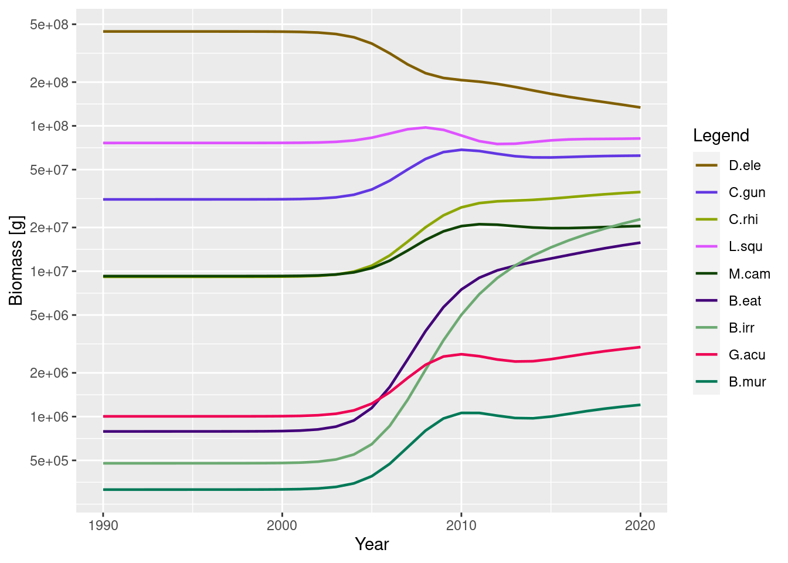
# If you like you can save the output for further analyses
#saveRDS(simf3,"simf3.rds")We can see here as effort develops towards a plateau of Fmax = 0.5 through time, catches initially increase, reach a peak around 2006, and then decline. The biomass trajectories also show that toothfish starts declining slightly before this.
Fishing through time: projecting into the future
Now let’s see what happens if we change fishing in the future. To do this we set up two scenarios, one where the model starts with the last time step of the fished scenario and continues into the future (the “status quo”). The other will be designed to explore a “more sustainable” scenario.
# Use the parameters from the last simulation
params <- getParams(simf3)
params <- setInitialValues(params, simf3)The setInitialValues() function has set the intitial spectra and the intial effort in the params object to the final values from simf3, i.e., to the values from 2020. The effort was
longline
714284.7 Let’s start a new simulation that begins with the effort from 2020 and projects forward for 50 years. We will apply a linear decrease in effort for toothfish to a target value (here assumed for simplicity to be F = 0.2). To do this we need to work the effort array again (time x gear) to enable changes in effort through time.
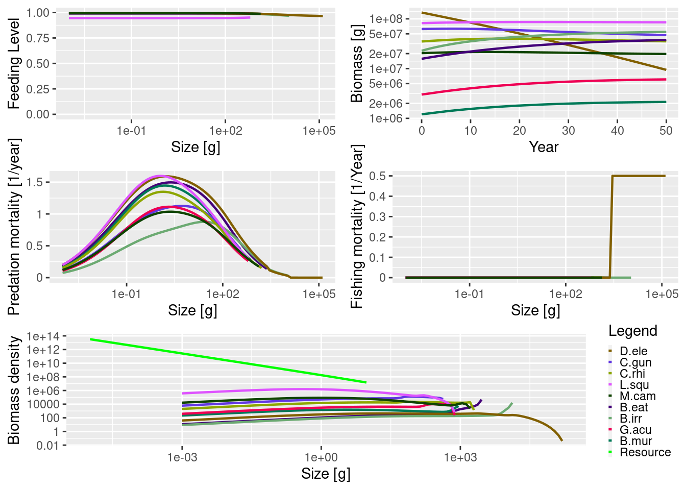
proj_effort_scen1 <- matrix(initial_effort(params),
nrow = 50, ncol = 1, byrow = TRUE)
dimnames(proj_effort_scen1) <-
list(time = 2021:2070, gear = unique(gear_params(params)$gear))
# check it
qplot(x = 2021:2070, y = proj_effort_scen1, ylab = "effort", xlab = "")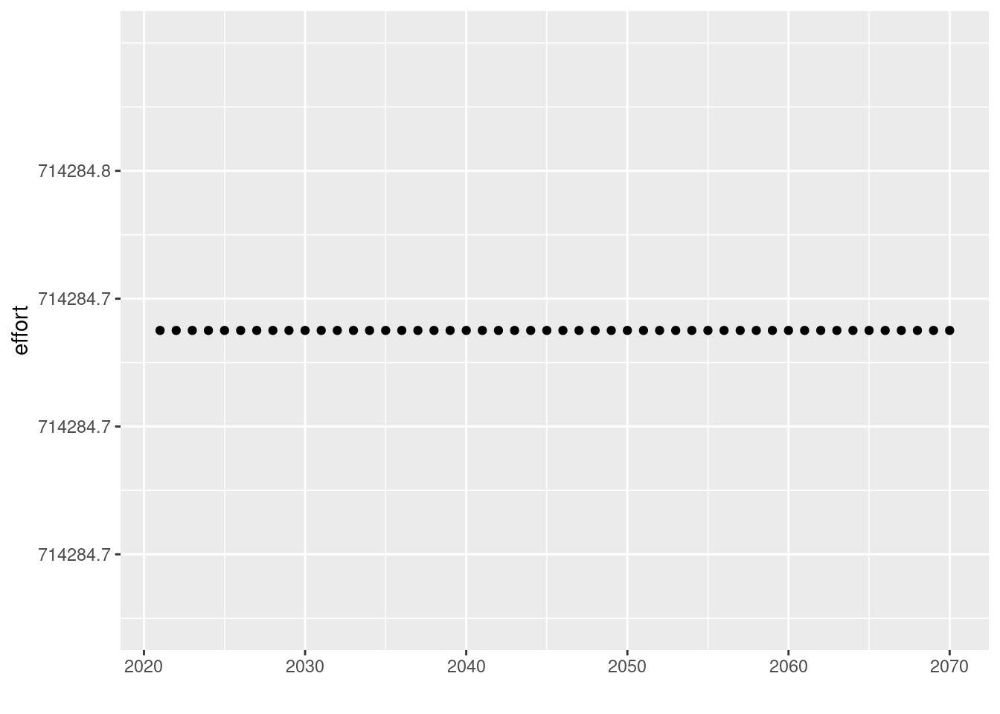
That was Scenario 1 (“status quo”), now let’s set up Scenario 2, the “more sustainable” option we wish to explore. Again, if we are working in the same units as the effort above we can change the F below to scale effort to be consistent with a value of F=0.2. So we need to set effort= catchability/targetF Otherwise if you assume targetF= catchability*E, and set catchability to 1, you can just use targetF=0.2 directly for Scenario 2.
proj_effort_scen2 <- proj_effort_scen1
targetF <- 0.2 / gear_params(params)$catchability[1]
select_gear = "longline"
# reach target by 10 years
proj_effort_scen2[1:10,select_gear] <-
seq(from = proj_effort_scen2[1], to = targetF, length = 10)
# then hold at target
proj_effort_scen2[11:50, select_gear] <- targetF
# check it
qplot(x = 2021:2070, y = proj_effort_scen2, ylab = "effort", xlab = "")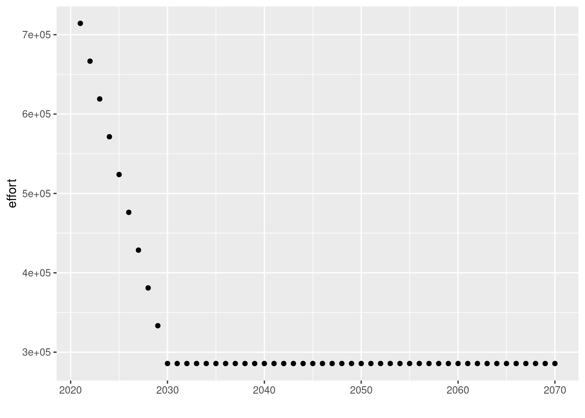
Now we want to run the simulation forward using the project() function.
# run the simulations forward, both using the 2020 abundances as initial values
params <- setInitialValues(params, sim)
sim_scen1 <- project(params, effort = proj_effort_scen1, t_max = 50)
sim_scen2 <- project(params, effort = proj_effort_scen2, t_max = 50)How has this affected the catches and the biomass of other species in the system relative to fishing levels in 2020?
#set the scenario to examine relative to 2020 levels
scen<-sim_scen2
plotYield(scen)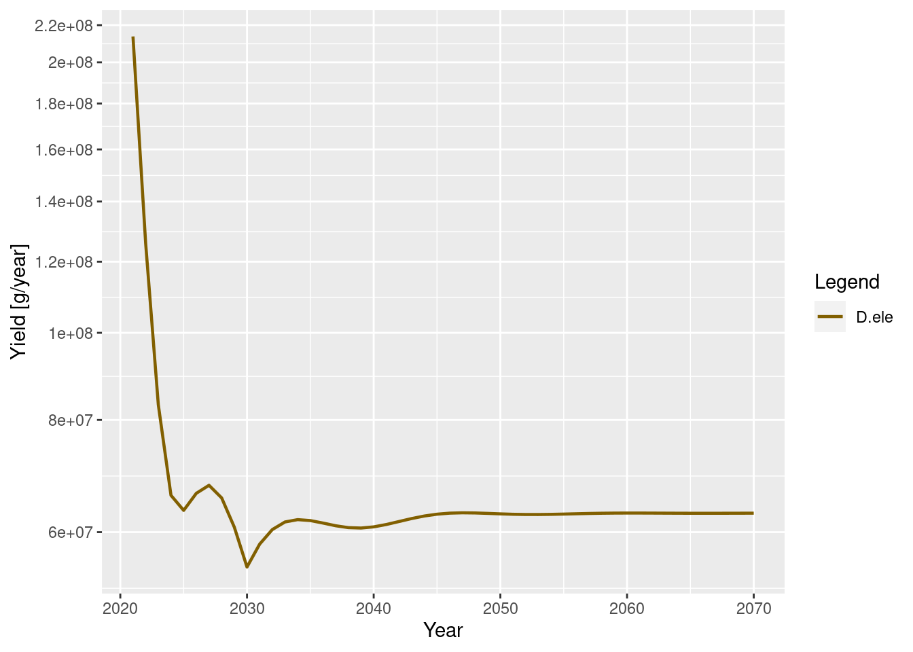
# plot change in biomass under each scenario relative to current values
B_current <- getBiomass(scen)[1, ]
Brel_scen <- melt(sweep(getBiomass(scen), 2, B_current, "/"))
colnames(Brel_scen)[2] <- "Species"
legend_levels <- intersect(names(scen@params@linecolour), Brel_scen$Species)
ggplot(Brel_scen) +
geom_line(aes(x = time,y = value,color = Species), size = 1) +
geom_hline(yintercept = 1, linetype = 1, colour = "grey", size = 0.75) +
scale_y_continuous(name = "Relative biomass") +
scale_color_manual(values = sim@params@linecolour[legend_levels]) +
theme(legend.key = element_rect(fill = "white")) 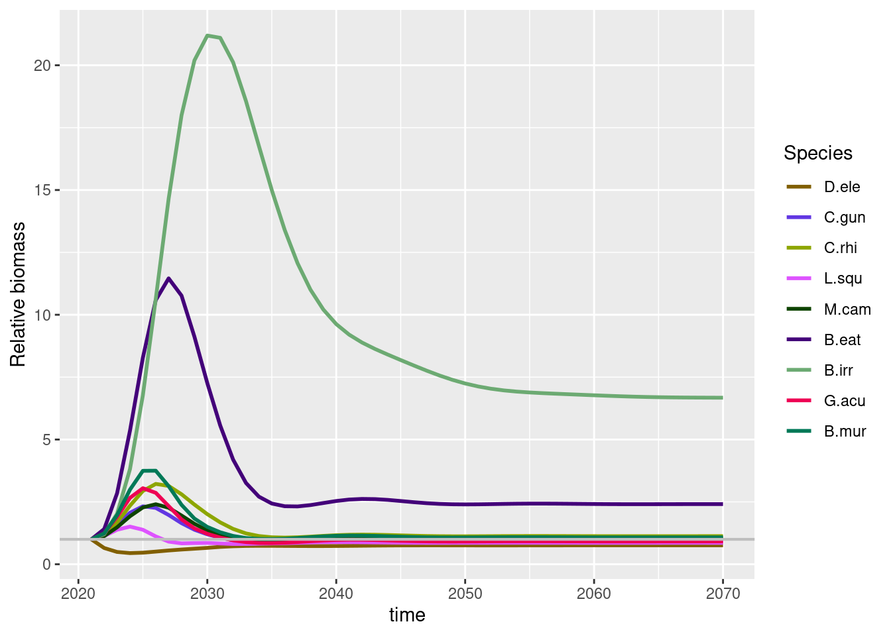
Relative to 2020 values, reducing Fmsy to 0.2 has increased toothfish biomass and has affected the other species in the system too.
To compare the status of the stock across the two scenarios we need to express the changes relative to the unfished state according to the model. This will provide us with a rough indicator of the level of depletion. Generally, we would consider a stock to be collapsed if biomass was < 0.1 of the unfished levels. Some data-poor single species fisheries management strategies seek for depletion to be around or above 0.5 of unfished levels.
Let’s take a look at the relative exploitation status of the stocks using the projected values for 2050. We will put the y-axis scale is log10 to better visualise the differences across species.
# plot change in biomass under each scenario relative to unfished values
# get saved values from steady state without fishing that we generated earlier
sim0<-readRDS("sim0.rds")
# get the unfished biomasses
B_unfished <- getBiomass(sim0)[1, ]
#scen 1
Brel_scen1_2050 <- getBiomass(sim_scen1)["2050",]/B_unfished
#scen 2
Brel_scen2_2050 <- getBiomass(sim_scen2)["2050",]/B_unfished
Brel_scens <- rbind(data.frame(species=names(Brel_scen1_2050),value=Brel_scen1_2050,scen="scen1"),data.frame(species=names(Brel_scen2_2050),value=Brel_scen2_2050,scen="scen2"))
# barplot comparing the 2 scenarios by 2050
ggplot(Brel_scens, aes(fill=scen, y=value, x=species)) +
geom_bar(position="dodge", stat="identity") +
geom_hline(yintercept = 0.1, linetype = 2, colour = "red", size = 0.5) + scale_y_log10(name = "log10(Biomass/Biomass Unfished)")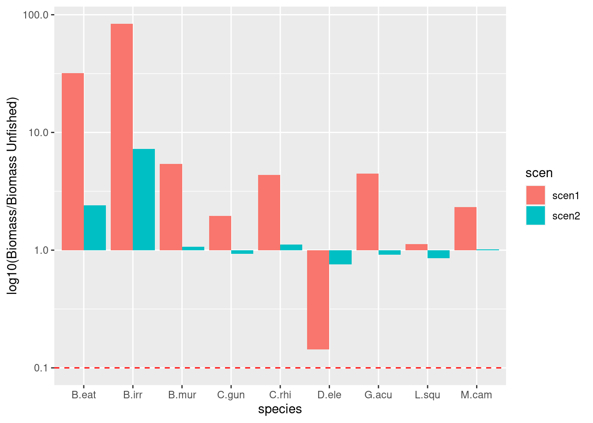
# to save:
#saveRDS(sim_scen2,"sim_scen2.rds")Species with B/B_unfished values that are below the red dashed line imply the stock is still collapsed.
We can see that when we decrease fishing to the targetF under scenario 2 this greatly improves the relative biomass compared to the status quo. This is consistent with our expectations from the equilibrium Fmsy that we tuned. Another thing to note is that, relative to the unfished community, there are several species that increase less under this fishing scenario - this is what happens when account for food web interactions in models!
Set up your own fishing scenario: simpler comparison of steady states
Rather than an entire time-series, we can also simply examine differences between two time-averaged states under different fishing regimes.
We can alter the fishing parameters using a function called gear_params() and by changing the effort input.
Let’s take a look at the fishing parameters.
We can group species together according to the gears they are caught by. Initially let’s just add another gear - a trawler targeting icefish (C.gun).
# allocate species to gear types
gear_params(params) <- data.frame(
gear = c("longline", "trawler"),
species = c("D.ele", "C.gun"),
catchability = c(1, 1),
sel_fun = c("knife_edge", "knife_edge"),
knife_edge_size = c(2722, 52)
)
#check it
gear_params(params)Note that catchability is set to 1. This is because the fishing “effort” was here assumed to be the fishing mortality rate of fully selected sizes (see here setFishing).
params <- setFishing(params, initial_effort = 0.1)Now let’s run two simulations, one with light fishing mortality (F = 0.2) and one heavy fishing (F = 1.5).
sim_unfished <- projectToSteady(params, effort = 0, t_max = 500)Convergence was achieved in 1.5 years.plot(sim_unfished)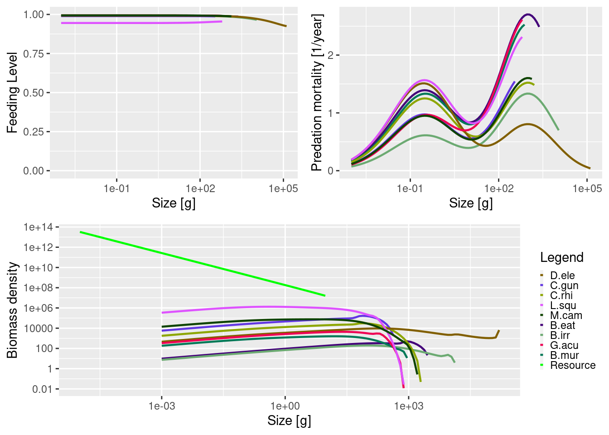
params_longline_trawl<-params
sim_longline_trawl <- projectToSteady(params_longline_trawl, effort = 0.1, t_max = 500)Convergence was achieved in 31.5 years.params_longline<-params
gear_params(params_longline)$catchability[2]=0
sim_longline <- projectToSteady(params_longline, effort = 0.1, t_max = 500)Convergence was achieved in 31.5 years.# plot change in biomass under each scenario relative to unfished values
# get the unfished biomasses
B_unfished <- getBiomass(sim_unfished)
#scen 1
Brel_longline <- getBiomass(sim_longline)/B_unfished
#scen 2
Brel_longline_trawl <- getBiomass(sim_longline_trawl)/B_unfished
Brel_scens <- rbind(data.frame(species=names(Brel_longline),value=Brel_longline,scen="longline"),data.frame(species=names(Brel_longline_trawl),value=Brel_longline_trawl,scen="longline_trawl"))
# barplot comparing the 2 scenarios by 2050
ggplot(Brel_scens, aes(fill=scen, y=value, x=species)) +
geom_bar(position="dodge", stat="identity") +
geom_hline(yintercept = 0.1, linetype = 2, colour = "red", size = 0.5) +
scale_y_log10(name = "log10(Biomass/Biomass Unfished)")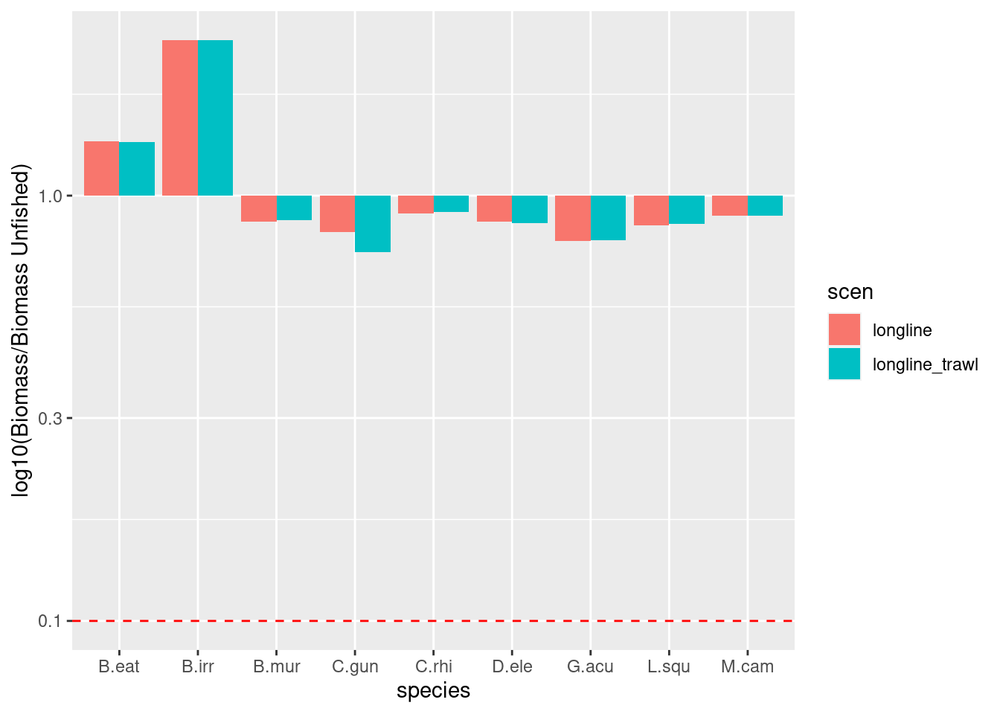
The impact of the combined trawl and longline appears to have more of an effect on C.gun and the biomass of D.ele is slightly more depleted relative to the unfished state.
Further Exploration The above plots provide you with a way to compare different modelling scenarios. You may wish to explore different levels of fishing mortality in the above example or add completely different gears to the fishery.